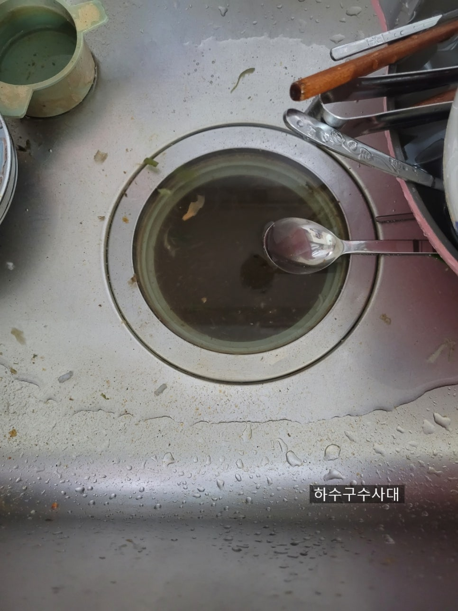
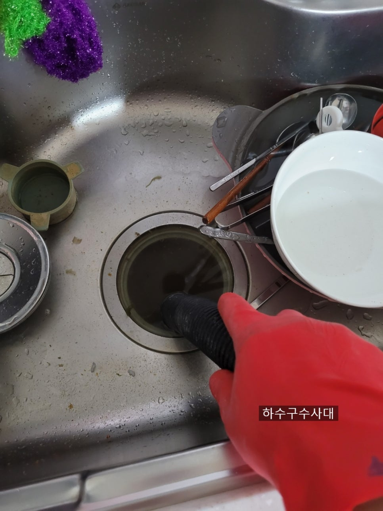
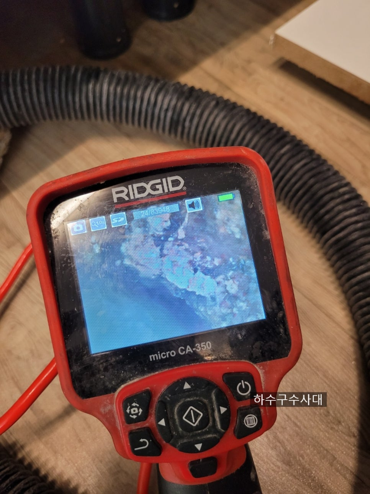
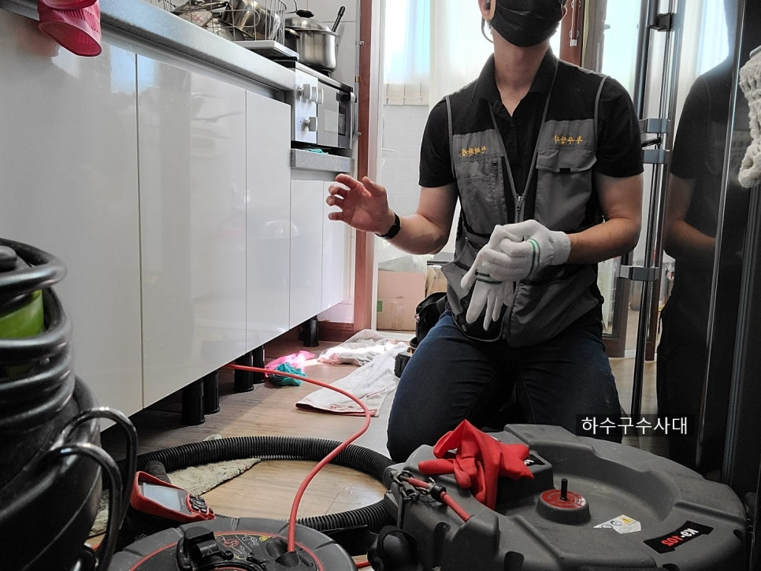
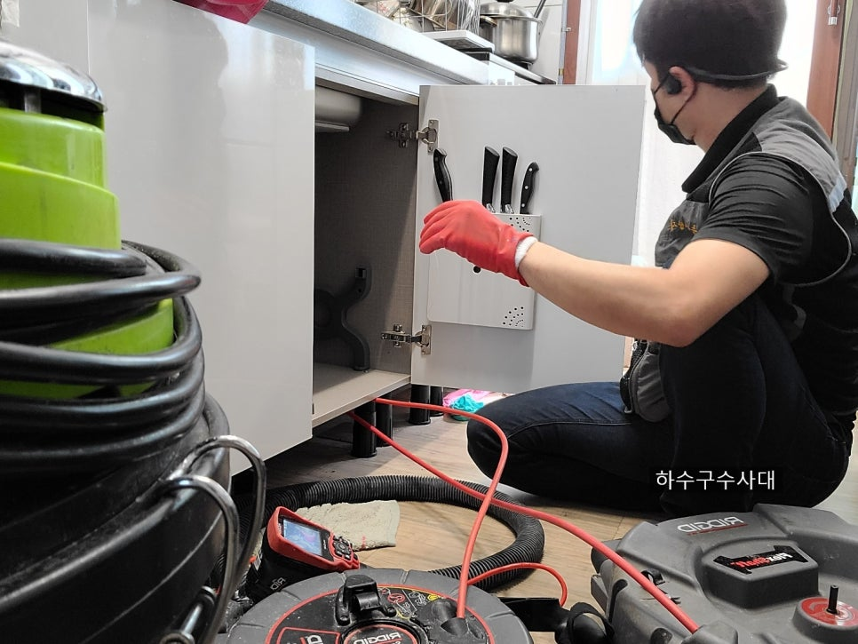
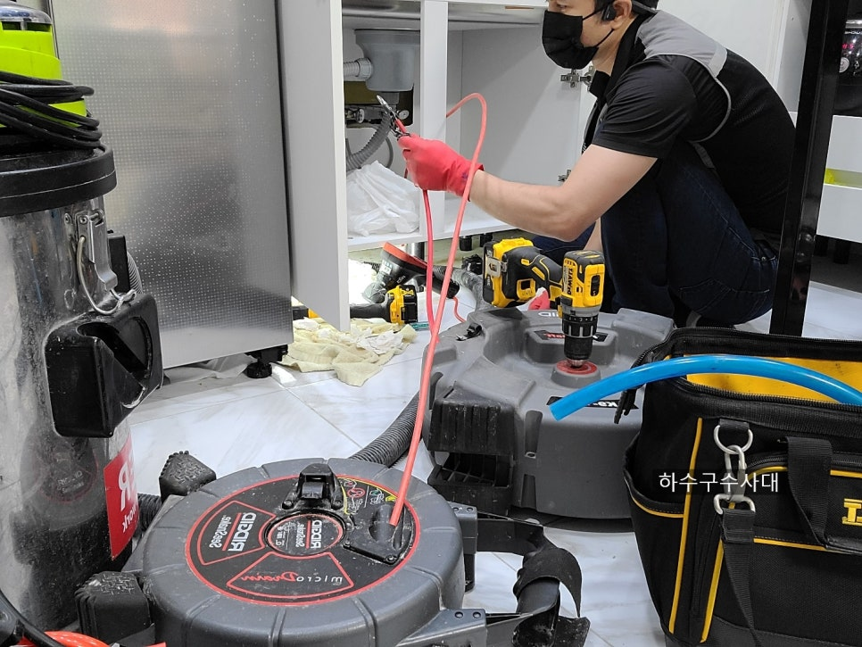
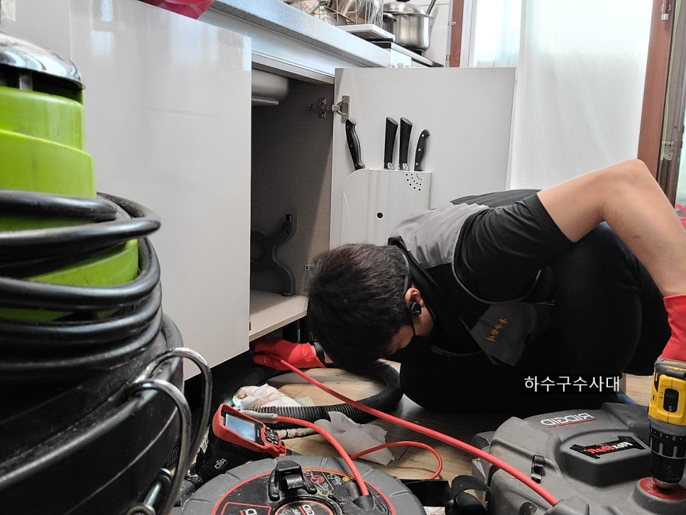

🏠 영통구 싱크대 막힘 싱크대 역류 광교 싱크대 막힘 이의동 배관 청소
서울 이의동 싱크대막힘 전문 시공 후기

📋 작업 개요
- 위치: 서울 이의동, 이의동, 서울
- 서비스 유형: 싱크대막힘, 하수구막힘, 배관막힘, 역류해결, 뚫는업체, 배관청소
- 작업 일시: 2021. 6. 14. 0:12
- 업체명: 하수구수사대 (010-5615-2118)
🔍 문제 상황
영통구 싱크대 막힘 싱크대 역류 광교 싱크대 막힘 이의동 배관 청소
안녕하세요 하구고 수사대입니다.
평일에 쉬고 일요일에 일하고 있지만
일요일은 좀 급한 현장들이 많습니다.
오늘도 몇 군데 급한 현장들을 해결해
주느라 퇴근이 좀 늦었네요.
오늘은 싱크대 막힘 현장을 다녀왔는데요
싱크대는 음식을 하고 설거지를 하는 곳으로
우리 일상에서는 없어서는 안 될 공간입니다.
싱크대 막힘
싱크대가 막혀서 물이 빠지지 않으니
물을 쓸 수가 없으니 여간 불편하지
않을 수가 없을 것입니다.
석션 작업
먼저 위에 물을 빼줍니다.
위에 물이 차 있는 경우 윗물을 빼주고
다음 아래 배관 호스를 빼내어 흡입하여
줍니다.
내시경 검수
내시경을 배관에 넣어보니
기름이 90% 이상 배관을 막고
있습니다.

🔎 원인 분석
💡 전문가 진단: 서울 경기 인천하수구 수사대010-2340-2118
배관에 붙어있던 기름들이 일부
무너져 좁은 구멍마저 꽉 막아
버렸습니다.
배관에 기름이 많다면 기본적인
작업보다는 배관 스케일링을 하는 것이
바람직합니다.
가끔 어느 고객께서는 스프링 작업을
두 번이나 해도 금방 막혀서 연락을
주시는 분도 계시는데 내시경으로
배관을 보시고는 그동안 헛돈을 날렸다고
억울해 하시는 고객님도 계십니다.
사진처럼 기름이 가득한 배관에 16mm
스프링으로 작업을 해봐야
기름 덩어리는 완벽히 제거가
되기 너무너무 아니 아예 할 수가 없기에
되도록이면 전문가에게 의뢰하시길
추천드립니다.
작업 브리핑
고객님께 배관 상태에 맞는 작업을
설명드리고 작업을 시작합니다.
장비 세팅
배관 크기에 맞게

🔧 작업 과정
직경을 조절해 주는 것도
중요합니다.
스케일링 작업
배관 스케일링 작업을 진행하고
오른쪽 사진처럼 장비가 지나가면서
기름 덩어리들을 갈아버립니다.
기름을 한 번에 제거하기 힘들기 때문에
반복적인 작업을 해줍니다.
내시경을 보면서 배관에
남아있는 기름을 제거하기 시작합니다.
보통 싱크대가 막혀서 부르시는
고객님들께서 공통적으로 하는 말이
살면서 싱크대가 막힌 건 처음이다.
하수구가 막힌 건 처음이라는
말씀들을 많이 하시는데 솔직히
흔치 않은 일이긴 합니다.
저도 작업을 하면서 느끼는 거지만
배관 기울기를 제대로 준 곳은
거의 막히질 않습니다.
보통 막히는 현장의 배관을 청소 후
내시경으로 보면 기울기가 좋지 않아
기름이 많이 발생할 수밖에 없는
구조로 되어있습니다.
더군다나 요즘 서구화된 식사로
많은 기름을 섭취하는 것도
한몫하고 있죠.
배관 청소 후
이곳도 배관에 물이 고여있는 것이
보입니다. 기울기가 나쁘지도
그다지 좋지도 않네요.
꾸준한 관리가 필요할 거 같습니다.
한 달에 한 번 정도 배관 관리를
위해 뚫어 펑을 부어 배관에
조금이나마 붙어있는 이물질을
제거해 주는 것이 좋습니다.
싱크대에 물을 받아 테스트를 진행합니다.


✅ 작업 완료
시원하게 잘 내려가네요^^
고객님께서도 속이 다 시원하다고
하시면서 하수구 수사대에
의뢰하길 잘했다고 하시네요^^
이상 하수구 수사대였습니다!
좋은 하루 보내십시오^^
서울 경기 인천
하수구 수사대
010-2340-2118




⚠️ 주방 싱크대 배관 막힘 예방 수칙
- ✅ 기름기가 묻은 식기나 프라이팬은 설거지 전 키친타올로 반드시 기름때를 닦아내세요.
- ✅ 주기적으로 싱크대 개수대에 뜨거운 물을 가득 받아 한 번에 내려 배관 내부 기름을 씻어내세요.
- ✅ 배수구 거름망을 미세한 필터로 사용하시고 음식물 찌꺼기가 틈으로 새어 들지 않게 관리하세요.
- ✅ 베이킹소다와 식초를 뜨거운 물과 함께 일주일에 한 번씩 부어주면 배관 살균과 막힘 예방에 좋습니다.
💡 핵심 정리
- 확실한 장비 작업(내시경 점검 및 샤프트 스케일링)으로 원인을 뿌리 뽑습니다.
- 작업 후 1년 이내에 동일한 부위 재발 시 100% 무상 A/S 서비스를 보장합니다.
- 서울 · 경기 · 인천 전 지역에 24시간 언제든 긴급 출동할 수 있도록 항시 대기 중입니다.
❓ 자주 묻는 질문 (FAQ)
🚨 서울 이의동 싱크대막힘 문제로 고민이신가요?
정확한 원인 진단과 확실한 시공으로 재발 없는 해결을 약속드립니다.
24시간 긴급 출동 | 서울 · 경기 · 인천 전지역 | 1년 내 재발 시 무상 A/S